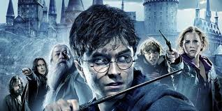

"As Harry and Ron rounded the clump of trees behind which Harry had first heard the dragons roar, a witch leapt out from behind them.
It was Rita Skeeter. She was wearing acid-green robes today; the Quick-Quotes Quill in her hand blended perfectly against them.
"Congratulations, Harry!' she said beaming at him. I wonder if you could give me a quick word? How you felt facing that dragon?
How do you feel now about the fairness of the scoring? Yeah, you can have a word," said Harry savagely. Goodbye!""
“At that moment, Harry fully understood for the first time why people said Dumbledore was the only wizard Voldemort had ever feared.
The look upon Dumbledore's face as he stared down at the unconscious form of Mad-Eye moody was more terrible than Harry could have ever imagined.
There was no benign smile upon Dumbledore's face, no twinkle in the eyes behind the spectacles. There was cold fury in every line of the ancient face;
a sense of power radiated from Dumbledore as though he were giving off burning heat.”
“He could tell at once that they carried different sorts of bubble bath mixed with the water though
it wasn't bubble bath as Harry had ever experienced. One tap gushed pink and blue bubbles the size of footballs;
another poured ice-white foam so thick that Harry thought it would have supported his weight if he'd cared to test it;
a third sent heavily perfumed purple clouds hovering over the surface of the water. Harry amused himself for a while
turning the taps on and off, particularly enjoying the effect of one whose jet bounced off the surface of the water in large arcs.”
“Severus, please fetch me the strongest truth potion you posess, then go down to the kitchen and bring up the house elf called Winky.
Minerva, kindly go down to Hagrids house where you will find a large black dog sitting in the pumpkin patch. Take the dog up to my office,
tell him I will be with him shortly, then come back here.”

“I smell guilt. There is a stench of guilt upon the air. I see you all, whole and healthy, with your powers intact
— such prompt appearances! — and I ask myself . . . why did this band of wizards never come to the aid of their master,
to whom they swore eternal loyalty? And I answer myself, they must have believed me broken, they thought I was gone.
They slipped back among my enemies, and they pleaded innocence, and ignorance, and bewitchment. . . .
And then I ask myself, but how could they have believed I would not rise again? They, who knew the steps I took, long ago,
to guard myself against mortal death? They, who had seen proofs of the immensity of my power in the times when I was mightier
than any wizard living? And I answer myself, perhaps they believed a still greater power could exist, one that could vanquish
even Lord Voldemort . . . perhaps they now pay allegiance to another. . .”